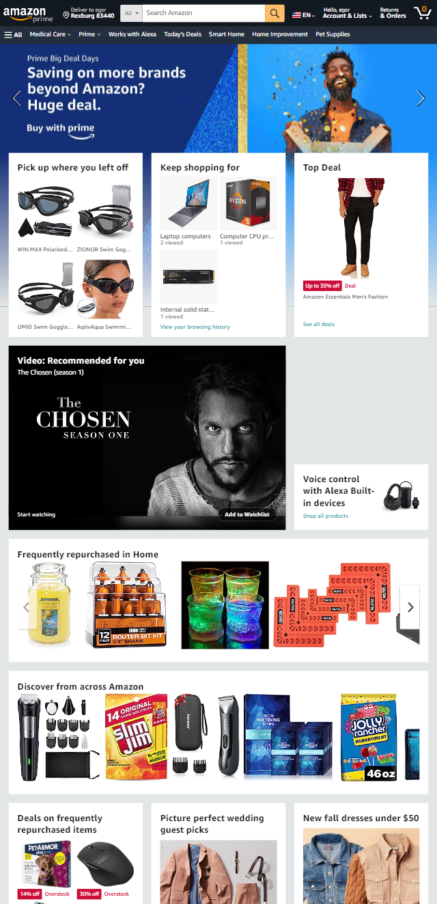

Design Principles Document
Egor Smirnov
Visual Hierarcy
Church of Jesus Christ of LDS
churchofjesuschrist.org

I choose church website as example of Visual hierarchy.
According to one of many websites: Visual hierarchy is
the principle of arranging elements to show their order of importance.
The first thing you see when visiting Church site is (for now)
invitation to come and listen to the living prophets voice.
Then the elements that follow after explain beliefs that members
of the Church have and a tool to find Church building near you and act.
These are in my opinion a good example of Visual hierarchy because
the first things people see is the most important one.
Alignment
Amazon
amazon.com

Amazon webpage is a good exampe of alignment design principle it
has a bunch of different boxes with different things and
in order to make sense it should be properly aligned. A lot, if not all,
boxes with products are in their own distinct place which makes it
easier to find and see. Product boxes are not overshadowed by
eachother and most of them are grouped by their departmens.
Contrasts
Pluralsight
pluralsight.com
Pluralsight webpage is contrast example that I choose to use. It
uses multiple colors that greatly interact with each other and
look great in general. All elements have pleasant look and easy to read.
Text size and color make the same pleasant impression.
Usage of darker colors from a start means that there are no needs
in a light theme. The overall menu, search bar, help and notifications
are easily seen and good looking as well as other functionality.